Entrenamiento
El ejercicio puede beneficiar al organismo de diferentes maneras. Aparte de contribuir al mantenimiento de un peso corporal sano, el ejercicio aumenta la movilidad, protege contra la pérdida de masa ósea, reduce los niveles de estrés y aumenta la autoestima. Y los estudios han demostrado que las personas que hacen ejercicio tienen menos probabilidades de padecer enfermedades del corazón, presión arterial alta y niveles elevados de colesterol. Las personas de cualquier edad y nivel de condicionamiento físico pueden beneficiarse realizando algún tipo de ejercicio físico, ya sean carreras, caminatas, baile de salón, ejercicios aeróbicos acuáticos, jardinería o cualquier otra actividad física.
Hay tres categorías de ejercicio físico: de fuerza o fortalecimiento, cardiovascular, y de elongación o de Fexibilidad. Un programa de ejercicio bien equilibrado incluye algún tipo de ejercicio de cada categoría.
Los ejercicios de fuerza y flexibilidad se denominan ejercicios anaeróbicos. El ejercicio anaeróbico no brinda beneficios cardiovasculares, pero fortalece los músculos y los huesos. El ejercicio cardiovascular también se denomina ejercicio aeróbico; emplea los músculos grandes y puede realizarse durante largo tiempo.
Ejercicios de Fuerza
Todos los deportistas necesitan desarrollar su fuerza física, incluso cuando se trata de deportes en los que no existe el contacto físico, como el atletismo de velocidad: en ese caso, es importante potenciar la fuerza física de las piernas. Los ejercicios de fuerza son necesarios tanto para los deportistas como las personas que quieren mantener su nivel de salud, o bien mejorarlo en el caso de sufrir alguna falencia: la obesidad, por ejemplo, se previene y se trata con esta clase de ejercicios, junto con ejercicios cardiovasculares.
Cuando se trata de niños o de jóvenes, que todavía están desarrollando sus músculos, es muy importante que la carga del ejercicio no sea lo suficientemente grande como para que el cuerpo se sobrecargue y se modifique el normal desarrollo del cuerpo.
La clave de un buen entrenamiento o una buena rutina de gimnasio es, sin duda, el equilibrio. Por ello, hay que tener en cuenta el entrenamiento intercalado por grupos musculares.
Tren Superior
Es probable que cuando pienses en los entrenamientos para el tren superior del cuerpo, te imagines haciendo ejercicios como el press de banca, los curls de bíceps y el press de hombros desde la sala de pesas de un gimnasio. No obstante, debido al aislamiento preventivo por la COVID-19 o a que quizás sea tu primera vez entrenando, ir al gimnasio puede resultar intimidante pero no imposible, puedes comenzar con algunos ejercicios desde tu casa e ir adaptándote a la rutina.
Al realizar ejercicios en casa debes definir una rutina de entrenamiento apropiada, en este caso para el tren superior, donde debes conocer bien los movimientos que emplearás para mejorar los resultados.
Brazos
Los brazos son, posiblemente, una de las partes del cuerpo que más delata el paso de los años, pero esto no tiene por qué significar que a partir de cierta edad tengas que esconderlos. Lucir unos brazos tonificados y bonitos requiere una cierta constancia y dedicación. ¡Pon en práctica esta rutina de ejercicios con mancuernas para hacer en casa! ¡Verás los resultados!
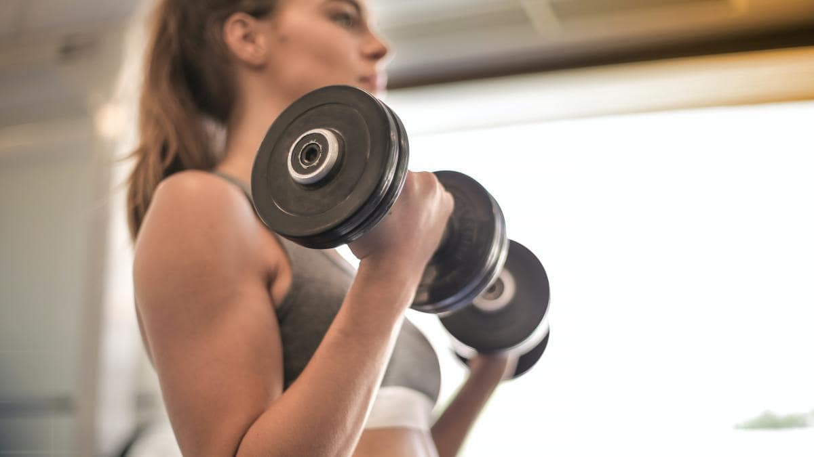
Extensión de tríceps con mancuerna
Posición de sentadilla, con los pies algo separados y rodillas ligeramente flexionadas, llevamos los brazos por detrás de la cabeza sujetando una de las mancuernas. Desde esa posición, estiramos completamente los brazos hacia arriba y volvemos a encoger. Repetimos el movimiento 10-12 veces en 3 series distintas.
'Curl' alterno de bíceps
Como en el ejercicio anterior, de pie, pies algo separados y rodillas ligeramente flexionadas, agarra dos mancuernas y flexiona un codo levantando el peso, luego baja controladamente y repite la operación con el otro brazo. Realiza 3 series de 10-12 repeticiones.
Elevación lateral de hombros
De pie, con las manos a los lados, y las piernas ligeramente flexionadas, toma una mancuerna de 2 kilos en cada una. Desde esta posición inicial, con los brazos casi estirados durante todo el recorrido, levanta lateralmente las mancuernas hasta que los codos te queden a la altura de los hombros. Luego baja controladamente. Realiza 3 series de 10-12 repeticiones.
Elevaciones frontales de hombro alternas
Con los brazos extendidos en vertical y las palmas de la mano mirando hacia nuestro cuerpo, agarramos una mancuerna con cada mano. Desde esta posición, con los brazos hacia abajo, vamos haciendo elevaciones alternas hasta que el brazo quede en paralelo al suelo. Realiza 3 series de 10-12 repeticiones.
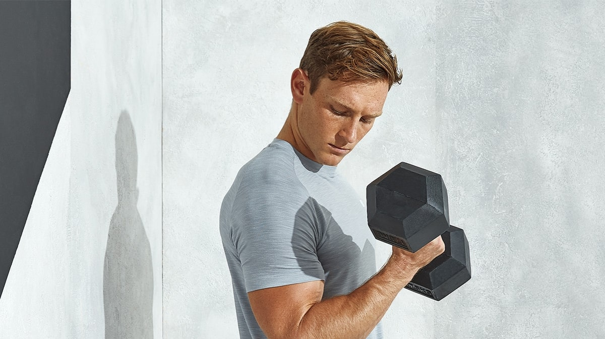
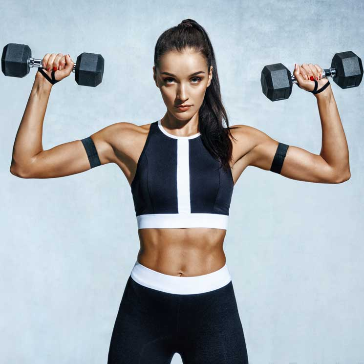
Tríceps
De pie, con los pies algo separados y rodillas ligeramente flexionadas, sostén las mancuernas con los brazos elevados a la altura de los hombros. Tu cabeza debe estar recta y mirando hacia adelante. Desde esta posición, extiende los brazos completamente empujando con las mancuernas hacia el techo. Bajar los codos lentamente a la posición inicial. Realiza 3 series de 10-12 repeticiones.
'Curl' de bíceps al unísono
De pie, con los pies algo separados y rodillas ligeramente flexionadas, agarra una mancuerna de 2 kg con cada mano y flexiona los codos levantando el peso, luego baja controladamente. Realiza 3 series de 10-12 repeticiones.
Espalda
La espalda es el nuevo six pack, y más cuando las temperaturas son altas y tenemos más ocasiones de prescindir de las partes de arriba de nuestra ropa. Pero, más allá de esto, una espalda fuerte es sinónimo de corrección postural, lo que te ahorrará infinidad de dolores y molestias derivadas de pasar demasiadas horas sentado o con el cuello extendido para mirar la pantalla del móvil y el ordenador.
Rutina de ejercicios de espalda en casa con mancuernas:
- Superman - 8 repeticiones
- Remo con mancuernas con los codos abiertos (dumbbell wide row) - 8 repeticiones
- Remo con mancuernas (dumbbell row) - 15 repeticiones
- Vuelos posteriores con mancuernas (reverse flies) - 8 repeticiones
Repetir hasta completar 2-3 series
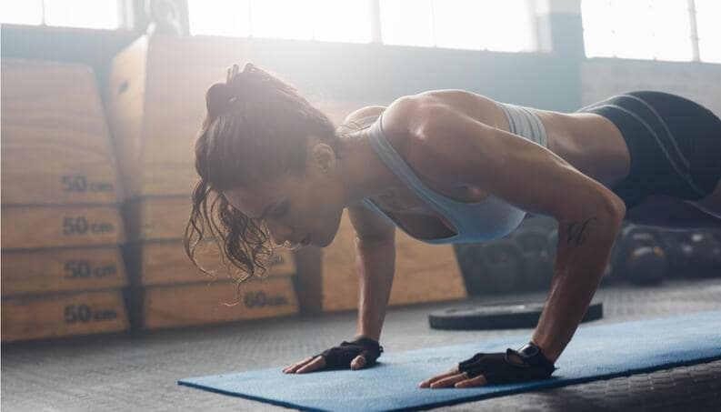
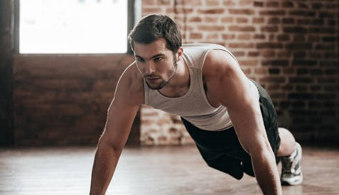
Superman
tumbado en el suelo boca abajo, con los brazos y piernas estirados, elevar tus cuatro articulaciones al mismo tiempo, despegando el pecho y las rodillas de la superficie. Aguanta un segundo y regresa a la posición inicial. Asegúrate de mantener los abdominales siempre activados y no dejarte caer en las bajadas, sino hacerlas de manera controlada.
Remo con mancuernas con los codos abiertos (dumbbell wide row)
De pie, rodillas ligeramente flexionadas, el tronco inclinado y la espalda recta. Sostenemos las mancuernas con los brazos estirados a la altura de las rodillas. Flexionamos los codos y los elevamos por encima de los hombros, dejando las mancuernas casi a los lados de los pectorales. Los codos no van hacia atrás, sino que quedan en paralelo a los hombros.
Remo con mancuernas (dumbbell row)
ponte de pie, con las rodillas flexionadas, el tronco inclinado hacia delante y la espalda y el cuello rectos, y sostén las pesas a la altura de las rodillas con los brazos estirados. A continuación, eleva las mancuernas hasta las caderas flexionando los brazos, y regresa a la posición inicial. Los codos deben subir rectos y debes notar cómo se acercan tus escápulas. También sentirás que te tiran los bíceps, los tríceps, los pectorales y los hombros.
Vuelos posteriores con mancuernas (reverse flies)
de pie, con el tronco inclinado y la espalda recta. Con los codos ligeramente flexionados y las mancuernas a la altura de las rodillas, abre los brazos hasta alcanzar la altura de los hombros. Vuelve a la posición inicial.
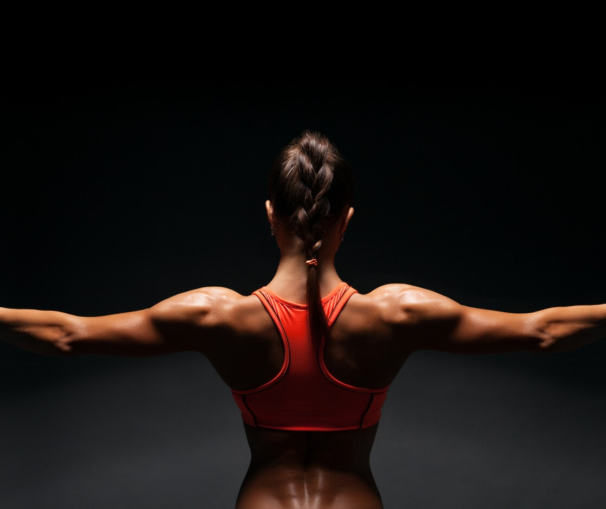
Pecho
Dos simples mancuernas, no muy pesadas. Eso es lo único que necesitas para armar un excelente entrenamiento en casa y triturar tu pecho y tríceps con unos pocos ejercicios pero muy eficaces. Una rutina para definir, quemar grasa y favorecer el crecimiento muscular sin salir de tu salón y en unos pocos minutos.
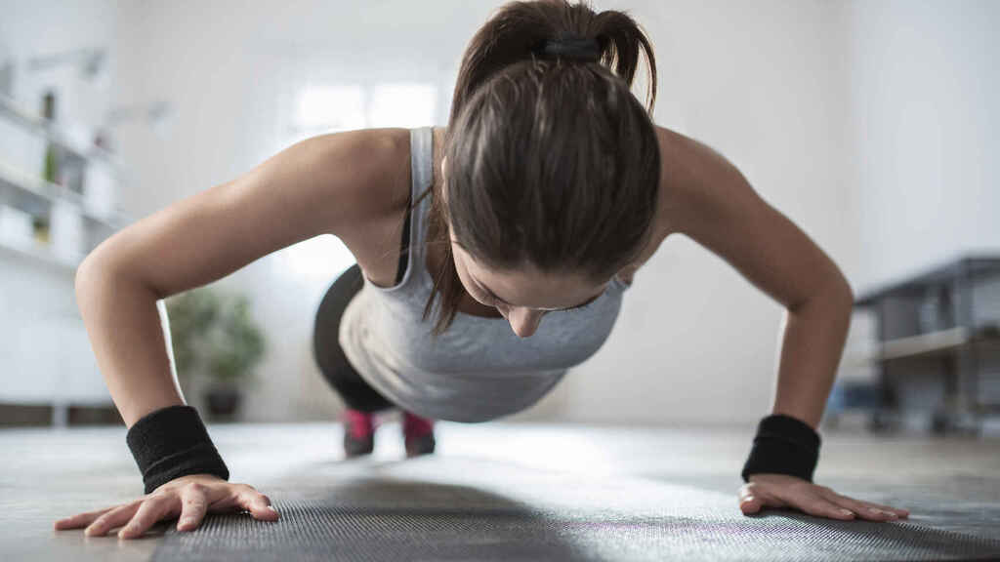
Remo prono con toalla
5 series de 20 repeticiones. Tumbado boca abajo con una toalla entre las manos, agarre ancho y dobla los brazos hacia tu barbilla y estira, muy lentamente. Trabajo de dorsales.
Flexiones con piernas en banco
5 series de 15 repeticiones. Para la parte superior del pecho, tan sencillo como subir las piernas al sofá o una silla y hacer flexiones concentradas
Flexiones staggered
5 series de 15 repeticiones con cada lado. Flexiones clásicas, pero con las manos a diferentes alturas para sorprender a tus músculos del pecho.
Snow angels
5 series de 20 repeticiones. Como muestra el video, abrimos y cerramos los brazos por delante de la cabeza mientras arqueamos la espalda como en el anterior ejercicio.
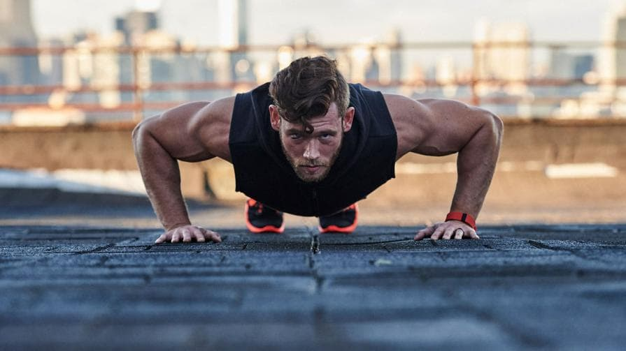
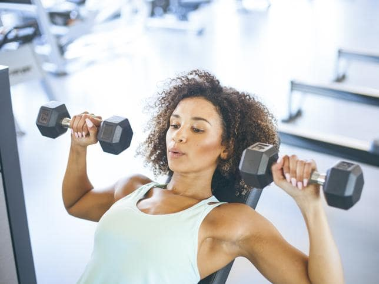
Extensiones de espalda
5 series de 20 repeticiones. Manos debajo de la barbilla y arqueamos ligeramente la espalda. Una técnica excelente para ejercitar tu espalda baja.
Flexiones diamante
5 series de 20 repeticiones. Manos juntas y flexiones para trabajar el pecho, pero también los tríceps. Cuanto más lento ejecutes el ejercicio muchísimo mejor e intenta rozar el suelo con la barbilla en cada repetición y no bloquees los codos en ningún momento
Abdominales
Nada ni nadie ha podido con ellos, ni siquiera nuestra falta de voluntad. Son completos, no requieren de mucho tiempo y puedes hacerlos en cualquier sitio. A continuación te presentamos una serie de ejercicios para tonificar y modelar tus abdominales.
Piernas elevadas
elevar las piernas, sin flexionar, y bajarlas lentamente hasta formar un ángulo de 45º entre las piernas y el suelo. Puedes repetir unos 20 veces este ejercicio para trabajar los abdominales inferiores. La variante más compleja, consiste en bajar las piernas, en bloque y estiradas, hasta unos centímetros antes de llegar al suelo.
Elevación de piernas con tijera
Es un ejercicio que completa al anterior. Manteniendo la misma postura, cruza las piernas con si fueran tijeras. No toques el suelo mientras bajas y si quieres sumarle intensidad mantén las rodillas sin flexionar.
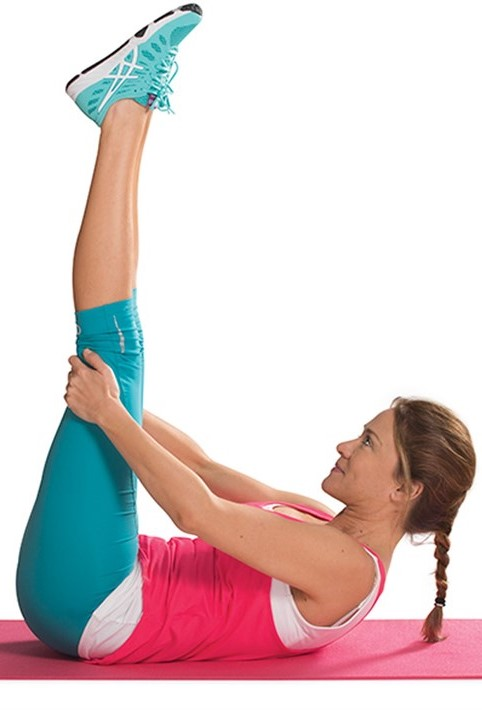
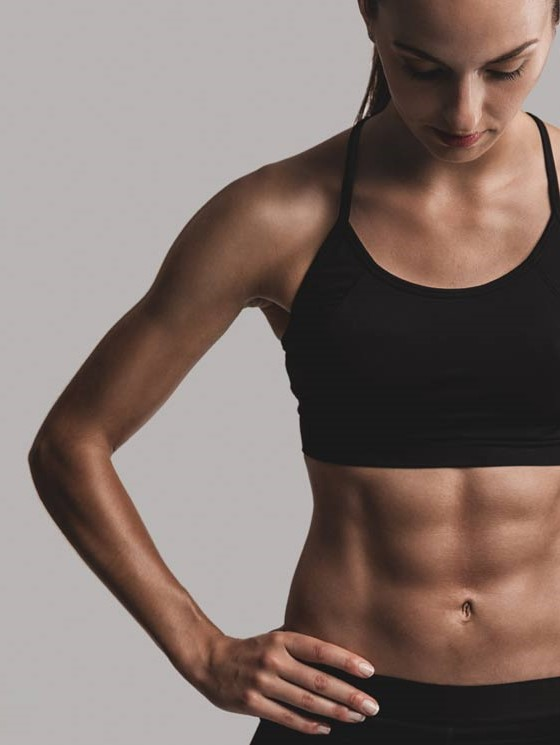
Plancha
Tumbada boca a abajo, eleva el tronco hasta lograr una posición alineada. Con frecuencia solemos elevar más los glúteos porque facilitan el ejercicio, pero debes mantenerlos en paralelo con el tronco. Comienza por hacer la plancha estática, mantén la postura durante 30 segundos y descansa, con la práctica puedes sumarle dificultad a este ejercicio.
Levantamiento en bloque
Este ejercicio consiste en tumbarte boca arriba y flexionar las piernas, apoyando los talones en la esterilla. Coloca los brazos en la nuca y levanta en bloque la parte del superior del cuerpo. Es tipo de abdominal que se utiliza en rutinas de alta intensidad. Controla el movimiento de los brazos, deben dar equilibrio por lo que debes mantener los codos hacia afuera.
Flexión de piernas
Tumbada boca arriba, flexiona las piernas a la altura del abdomen. Lleva los brazos a la nuca y eleva el tren superior. Puedes hacer diferentes elevaciones, para trabajar los abdominales superiores o de la zona media. Es importante controlar el balanceo del cuerpo porque puede producir lesiones. Repite 20 veces.
Toques al talón
Tumbada boca arriba con las rodillas flexionadas y los pies apoyados en la esterilla. Los brazos ubícalos a lo largo del cuerpo, extendidos. Elevando el tronco apenas unos centímetros del suelo, llevalo hacia la derecha, buscando tocar el talón. Mantén la contracción durante dos segundos, vuelve a la posición inicial y cambia de lado.
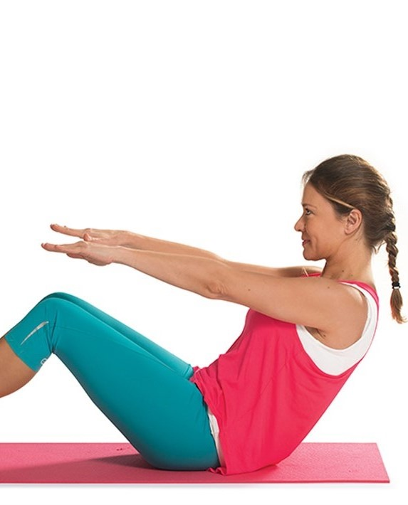
Tren Inferior
El entrenamiento de los grupos musculares que comprenden el tren inferior, es decir, glúteos, cuádriceps, isquiotibiales o gemelos, es una parte fundamental del ejercicio físico ya que su desarrollo y fortalecimeinto, más allá de consideraciones estéticas para lograr un conjunto más equilibrado, conlleva innumerables beneficios.
Así pues, en ningún caso hay que menospreciar la importancia de trabajar la zona en favor de abdominales, espalda, brazos, hombros o pectorales. Puede que suene exagerado equiparar la importancia de trabajar el tren superior a la del tren inferior, y en ocasiones depende de los objetivos que nos hayamos marcado, pero es algo básico porque es donde se encuentran los grupos musculares más grandes del cuerpo.
Piernas
Las piernas son parte esencial de cualquier tipo de actividad física. Mantener unas piernas en forma está al alcance de todos. Todo es cuestión de realizar unos sencillos ejercicios centrados en los diferentes grupos musculares que forman parte del tren inferior, sin necesidad de salir de casa ni utilizar ningún aparato.
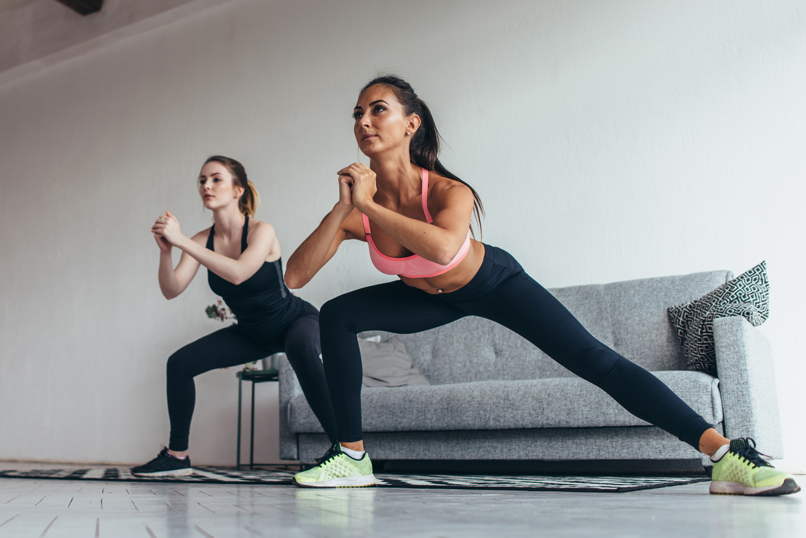
Zancadas alternas
La posición inicial es en cuclillas y con las manos posicionadas en la cadera. Adelanta una pierna y la otra, alternativamente. Ten en cuenta que la pierna que se encuentre levantada no debe superar un ángulo de 90 grados. Es un perfecto ejercicio para tonificar piernas y muslos si eres constante. Lo recomendable son dos series de catorce repeticiones. Se puede alternar el estiramiento de la pierna con la contracción de la misma, manteniendo el muslo paralelo al tronco.
Gemelos
Sitúate de puntillas y permanece estático durante 20 segundos. Descansa durante un minuto y repite el ejercicio 3 veces.
Burpees
Es un movimiento en el que participan una gran cantidad de músculos como, los glúteos y los cuádriceps. El ejercicio consiste en colocarnos de cuclillas, con las manos apoyadas en el suelo, y, desde esa posición, estirar las piernas hacia atrás y, seguidamente, volver a la posición inicial. Tras estirar las piernas, debemos finalizar el movimiento con un salto vertical.
Gemelos escalonados
Sitúate con las puntas de los pies en un escalón, ponte de puntillas y baja lentamente hasta que el talón quede por debajo de la línea del escalón. De este modo, el movimiento y la contracción del gemelo serán más amplios.
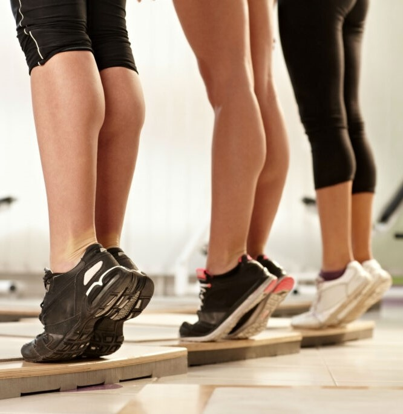
Piernas
Si deseas tener los glúteos perfectos, existen muy buenas rutinas fuera o dentro del gimnasio que te pueden ayudar. En el siguiente artículo aprenderás lo más eficaces ejercicios para reafirmar los glúteos y conseguir buenos resultados en cuestión de semanas.
La flacidez de los glúteos es un problema estético que requiere, en primera instancia, esfuerzo, y en segunda, constancia para poder corregirlo. Con ejercicios regulares puedes obtener la figura que deseas.
Es preciso tener en cuenta, antes de comenzar con la rutina para los glúteos, que en todo momento la espalda ha de estar recta, así la cuidarás y evitarás problemas. Lo que tiene que trabajar es la zona de los muslos y no la cintura.
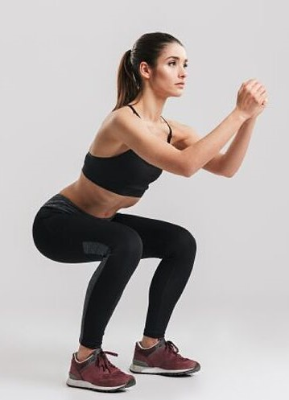
Sentadillas
De pie, separa las piernas hasta conseguir el ancho de los hombros. Si usas mancuernas, pueden quedar a los laterales del cuerpo (una en cada mano) o con los brazos estirados a los costados (a la altura de los hombros). Si usas barra de peso, pásala por detrás de la cabeza y sostenla con los hombros. Flexiona las rodillas para que el cuerpo descienda. Trata de que los muslos estén paralelos al suelo y que la línea imaginaria de la rodilla no sobrepase la punta de los pies. Mantén esta posición durante algunos segundos, luego, retoma la postura inicial. El movimiento debe ser lento y pausado.
Levantamiento de pelvis
Acuéstate boca arriba en una colchoneta y apoya las plantas de los pies en el suelo, flexionando las rodillas. Los brazos a los laterales del cuerpo. Eleva la pelvis hacia el techo, ejerciendo presión con los glúteos o muslos. La espalda debe quedar en diagonal al suelo. Mantén la postura durante unos segundos y vuelve a la postura inicial, sin llegar a tocar la colchoneta con los glúteos. Haz diez repeticiones, descansa y vuelve a empezar. Una variante de este ejercicio es colocar una pesa redonda en el abdomen.
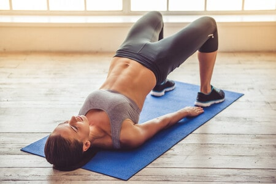
Ejercicios Cardiovasculares
Una definición sencilla del ejercicio cardiovascular es todo ejercicio que aumenta la frecuencia cardíaca a un nivel donde aún es posible hablar pero se empieza a sudar un poco.
150 minutos de ejercicio por semana en intervalos de 30 minutos es la cantidad mínima de ejercicio cardiovascular que se necesita para que el corazón se beneficie. Esta cantidad de ejercicio te permite realizar actividades físicas cinco días a la semana y descansar dos días. Recomendamos realizar actividad física 30 minutos al día durante 30 días para que el hábito de hacer ejercicio con regularidad se arraigue. Si podes hacer más, mucho mejor.
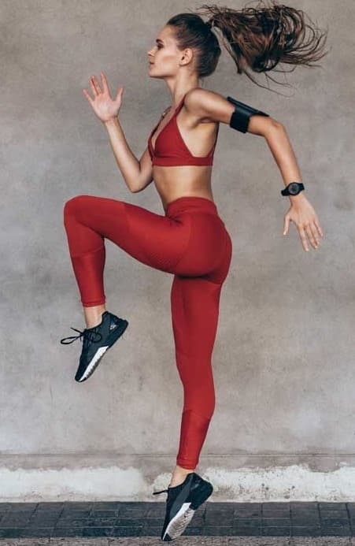
Cualquier tipo de movimiento es bueno, incluso la limpieza del hogar y la jardinería. Pero si querés adelgazar, tenes que realizar algún tipo de ejercicio cardiovascular durante 30 a 45 minutos o más, cuatro o más días por semana. El programa de ejercicio cardiovascular ideal comienza con 5 a 10 minutos de precalentamiento, que incluye movimientos suaves que aumentan levemente la frecuencia cardíaca.
Luego, gradualmente hacé unos 30 minutos o más de algún ejercicio cardiovascular, tal como gimnasia aeróbica, trote sobre tapiz rodante o caminata, hasta alcanzar lo que se denomina frecuencia cardíaca de entrenamiento. La frecuencia cardíaca de entrenamiento es una pauta que puede ayudarte a medir tu nivel de condicionamiento físico antes de iniciar tu programa de ejercicio y a medir tu progreso tras iniciar el programa.
La frecuencia cardíaca de entrenamiento también te indica la intensidad del ejercicio. Al comenzar un programa de ejercicio, lo aconsejable es mantenerse cerca del límite inferior de tu zona de entrenamiento. Si haces ejercicio con regularidad, podes hacer ejercicio a una intensidad suficiente como para mantenerte cerca del límite superior de la zona de entrenamiento.
Para asegurarte de mantenerte dentro de tu zona de entrenamiento, deberás tomarte el pulso cada tanto al hacer ejercicio. Podrás encontrar el pulso en 2 lugares: en la base del pulgar de cualquiera de las dos manos (lo que se denomina «pulso radial») o de un lado del cuello (lo que se denomina «pulso carotídeo»). Colocá los dedos índice y medio sobre el pulso y contá el número de latidos en un espacio de 10 segundos. Multiplicá esa cifra por 6 para calcular el número de latidos por minuto. Por ejemplo, si contaste 20 latidos durante los 10 segundos, tu frecuencia cardíaca sería de 120 latidos por minuto.
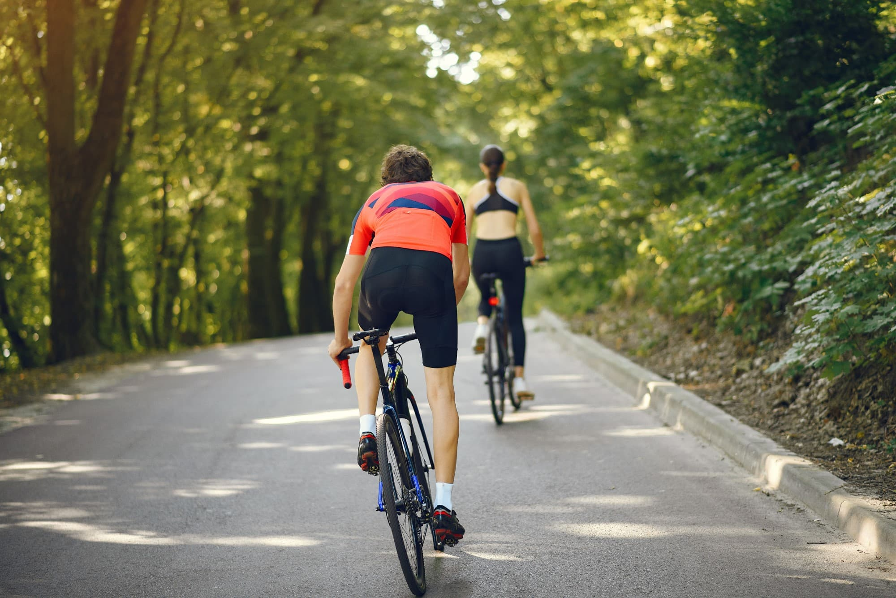
Ejercicios de elongación
Los ejercicios de flexibilidad son la parte más descuidada de los programas de condicionamiento físico. La flexibilidad puede mejorar la postura corporal, reducir el riesgo de sufrir lesiones, brindar más libertad de movimiento, y aliviar la tensión y el dolor muscular.
Antes de iniciar la fase de estiramiento del programa, siempre comenzá con un período de precalentamiento de 5 a 10 minutos de duración para relajar los músculos. Estirar músculos fríos puede causar lesiones.
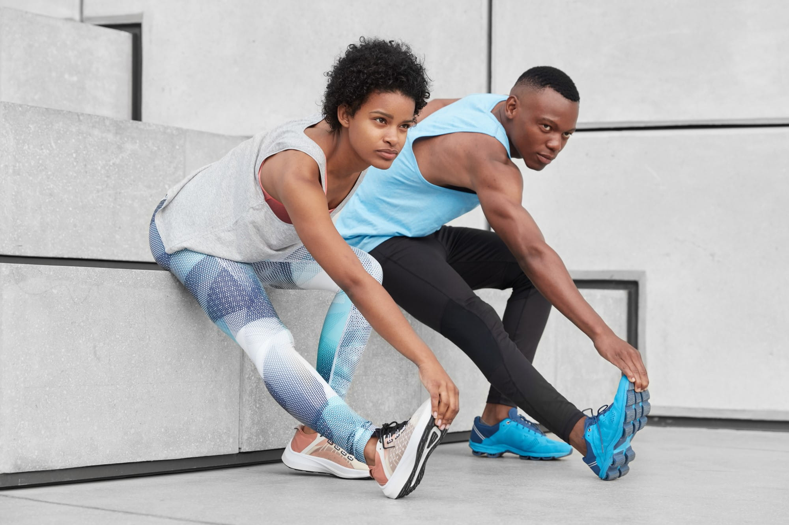
Algunos ejemplos de ejercicios de precalentamiento son caminar un poco, marchar en el lugar, pedalear lentamente en una bicicleta ergométrica o trotar suavemente. Si los ejercicios de estiramiento son parte de un programa más largo que incluye ejercicio cardiovascular, estirate siempre después de finalizar la fase de enfriamiento del programa. Es importante esperar hasta que la frecuencia cardíaca haya disminuido antes de comenzar la fase de estiramiento.
Trata de realizar ejercicios de estiramiento para cada grupo muscular. Cada estiramiento debe realizarse lentamente, manteniendo la posición durante por lo menos 10 a 30 segundos. No rebotes al estirarte, porque rebotar puede lesionar los músculos. Además, no estires demasiado los músculos, porque hacerlo podría producir una distensión o incluso un desgarro. Tratá de no contener la respiración al estirarte. En cambio, respirá lenta y profundamente durante todo el programa de estiramiento.
Ejercicios para adultos mayores
Los adultos mayores de 60 años deben aumentar el ejercicio físico para disfrutar de una vejez activa, saludable y feliz.
El sedentarismo contribuye rápidamente al deterioro de la salud y es un asesino silencioso, ya que está considerado una de las primeras causas de muerte prematura. Por este motivo, es muy importante que los adultos mayores se mantengan activos a pesar de sus limitaciones.
Mantener una rutina de actividad física en la tercera edad es muy favorable para la calidad de vida, humor, autoestima, salud y bienestar del adulto mayor. Esto debe combinarse con una dieta equilibrada y eliminando malos hábitos como el tabaco o el alcohol.
Principales ventajas de hacer ejercicio a partir de los 60 años:
Si hacemos más ejercicio a partir de los 60 años podremos prevenir graves problemas de salud física y mental. La actividad física ayuda a disminuir el colesterol y la presión arterial que son factores riesgo para enfermedades cardiovascular, insuficiencia cardíaca y accidentes cerebrovasculares.
Además, podremos olvidarnos de la obesidad, el sobrepeso y sus consecuencias en la tercera edad, ya que la actividad física nos ayudara a controlar el porcentaje de grasa corporal y a aumentar la masa muscular magra. Por último, el ejercicio físico también ayuda a mejorar la flexibilidad, el equilibrio y la fuerza al tiempo que reduce el riesgo de caídas habituales en la tercera edad.
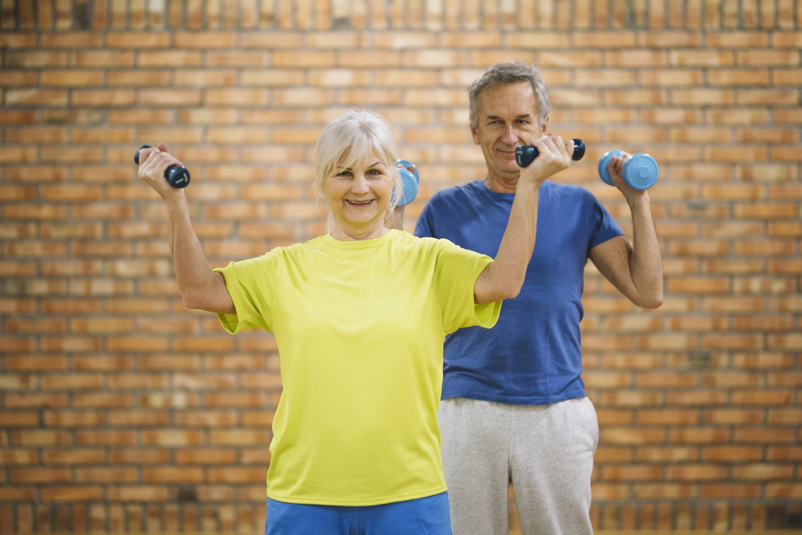
Existen cuatro tipos básicos de ejercicios y todos pueden ser practicados por personas mayores siempre y cuando sea una actividad controlada y llevada a cabo según la medida de las posibilidades de cada mayor.
- Ejercicios de resistencia (Aeróbicos): como caminar, nadar, bailar o andar en bicicleta.
- Ejercicios De fortalecimiento: como ejercicios de flexión, extensión de brazos y piernas, uso de bandas elásticas o levantando peso moderado con botellas de agua o mancuernas livianas.
- Ejercicios de equilibrio: como caminatas afianzando el talón, levantando un pie para dejar caer el peso del cuerpo en el otro.
- Ejercicios de flexibilidad: como flexiones, extensiones e inclinaciones.
Copyright © 2021 Julia Pedraza - Todos los derechos reservados